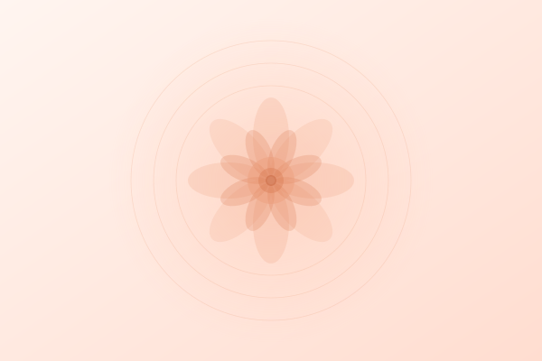

<!doctype html><html lang="ru"><meta charset="utf-8"><meta name="viewport" content="width=device-width,initial-scale=1"><title>Твой массажист · Макет</title><link rel="stylesheet" href="design.css"><header><a class="brand" href="index.html">Твой массажист</a><nav><a href="index.html#catalog">Массажи</a><a href="index.html#master">О специалисте</a></nav></header><main><section class="detail"><div class="service"><a class="line" href="index.html#catalog">← Для детей</a><h1>Общий массаж детей 3–7 лет</h1><a class="btn" href="index.html#master">Записаться ↗</a></div></section><section class="catalog"><h2>О сеансе</h2><dl class="facts"><div><dt>Стоимость сеанса</dt><dd>— ₽</dd></div><div><dt>Продолжительность</dt><dd>— мин</dd></div><div><dt>Место проведения</dt><dd>—</dd></div></dl><p>Значения в макете обозначены тире. На сайте они берутся из карточки услуги.</p></section></main><footer><a href="index.html">Твой массажист</a><span>Тюмень</span></footer><script defer src="motion.js"></script></html>